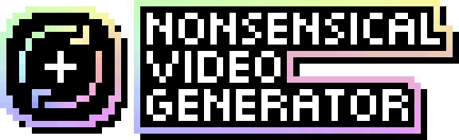
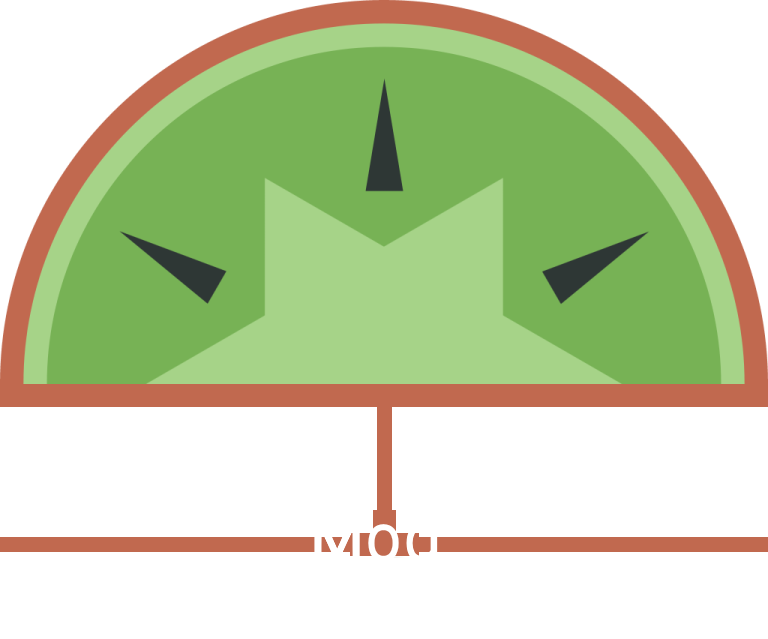

Projects
I've worked on many different projects, including Nonsensical Video Generator:
Notable Projects

Nonsensical Video Generator (NVG) is an automated video production tool which uses imported media to randomly remix videos. This project was derived from an earlier project that I released in November 2019 called YTP++.
NVG started development in March 2023, and was released on Steam in July 2023.
Links
Director's Cut was a community-driven filmmaking tool for the Source Engine. Based on the recently-released Team Fortress 2 SDK (Source SDK 2013), this project aimed to become an actively-maintained alternative to Source Filmmaker.
I was the project lead for Director's Cut, which started development in May 2022. There were 4 other contributors.
This project was discontinued on July 2 2025 due to development issues.
Links
- GitHub repository
- Bluesky profile
- Discord server
- Valve Developer Wiki page
- YouTube channel
- Reddit community

Kiwi's Co-Op Mod for Half-Life: Alyx (KCOM) added a co-op mode for Half-Life: Alyx. It worked by reverse-engineering the VConsole2 protocol, which is used for the game's console commands. By using VScript code to print out messages to the console, a .NET application can read these messages and send commands to the game. This led to the ability to network player positions and other game data.
This project was released in 2022, and I no longer maintain it.
Minor Projects
Source Filmmaker ScriptsFrom 2023 onwards, I released several Python scripts to the SFM Workshop that enhance the user experience of Source Filmmaker. Examples include a light limit patch, viewport resolution patch, and other tools like an autoinit manager.
Arkham Revived (Self-Hosted)A self-hosted authentication server for the online multiplayer mode of Batman: Arkham Origins. This was the result of reverse-engineering the original server when it was still online. Game networking is P2P, meaning that once the auth server is bypassed, you can still play online.
I originally released this project in 2023, however I no longer maintain either version.
Gameboy Printer Emulator ServerA node.js command line interface designed to be used with the Arduino Gameboy Printer Emulator project. It was designed to run on a Raspberry Pi. I made this to allow me to print out photos from my Gameboy Camera to a Bluetooth thermal printer from my phone.
This project was released in 2023, and I no longer maintain it.